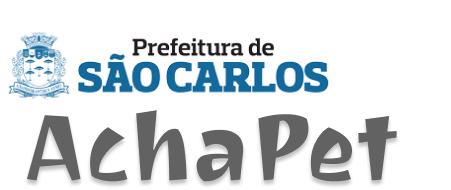
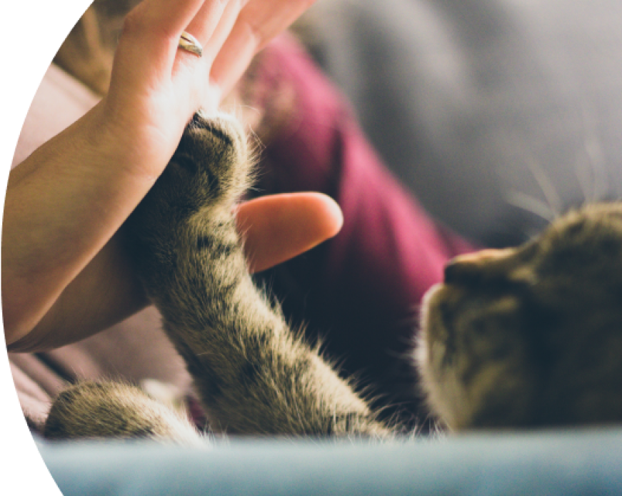
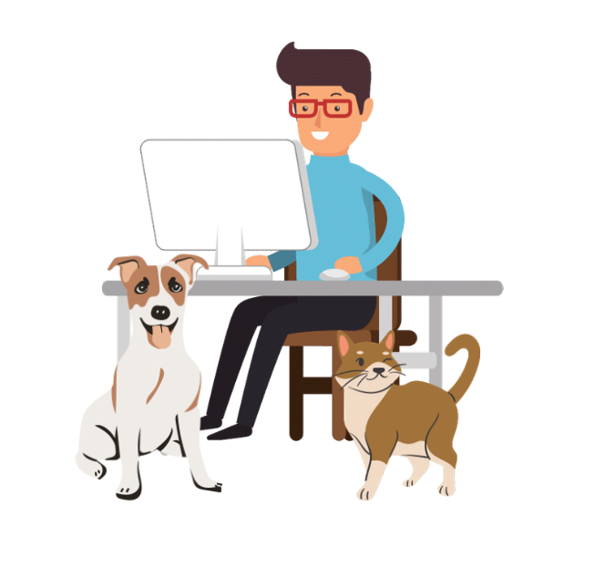
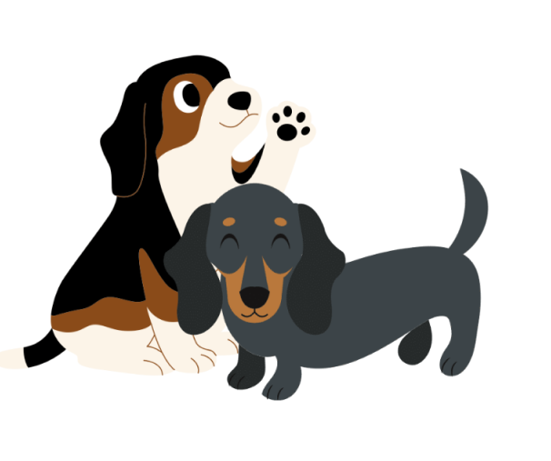
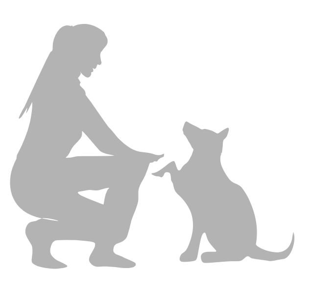

Quero adotar um Animal
Registro de Animais
São Carlos zelando pelo
Bem Estar de seus animais
Com objetivo de auxiliar na adoção de pets, o AchaPet permite conhecer os animais disponíveis para adoção, registrados por ONGs parceiras e o Canil Municipal de São Carlos.

Se você quer adotar um PET
Inicialmente, é necessário ter o registro de usuário, que pode ser realizado AQUI.
No registro, é necessário informar os dados pessoas solicitados e responder à algumas perguntas, para entendermos melhor seu perfil de adoção.


Após registro, basta realizar o login com seu usuário na opção Quero Adotar um PET.
Após realizado o login, será exibido os animais registrados, disponíveis para adoção, com fotos e dados sobre o animalzinho.
Ao encontrar um pet que tenha despertado interesse em realizar a adoção, basta acionar a opção Quero Adotar, que a instituição responsável pelo registro do animal, será notificada por email, e entrará em contato pelo email de usuário registrado.
